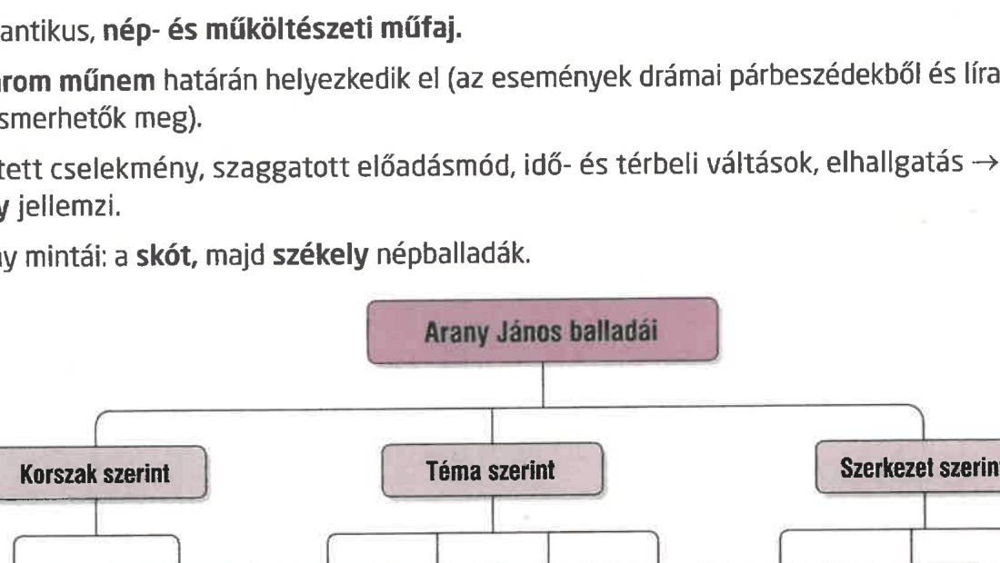

Arany János balladaköltészete
FELELETVÁZLAT
A ballada műfaji sajátosságai
- Romantikus, nép- és műköltészeti műfaj.
- A három műnem határán helyezkedik el: epikai történetet mond el, drámai párbeszédeket és lírai monológokat is alkalmaz.
- Sűrített cselekmény, szaggatott előadásmód, idő- és térbeli váltások, elhallgatások és balladai homály jellemzik.
- Arany mintái a skót, majd a székely népballadák voltak.

Ágnes asszony
- 1853-ban keletkezett.
- Lélektani témájú, egyes szám harmadik személyű, körkörös felépítésű, keretes szerkezetű nagykőrösi ballada.
- A bűn és bűnhődés, a bűntudat és a lelkiismeret-furdalás kérdését állítja középpontba.
- A műben a lélek összeroppanása, Ágnes asszony megőrülésének folyamata követhető nyomon.
- A történet szerint Ágnes asszony férjét meggyilkolta szeretője; az okok homályban maradnak, a következmény viszont egyértelmű: a tiszta lepedő kényszeres mosása a bűntudat jelképe.
- A patakban, a börtönben, majd újra a patakparton játszódó jelenetek a megtébolyodás állomásai.
- Az ismétlődő refrén, az idő gyors múlása és a szubjektív nézőpont erősíti a balladai hatást.
Híd-avatás
- Arany János késői balladái közé tartozik, 1877-ben keletkezett, városi témájú mű.
- Alapja az 1876-ban felavatott Margit híd környékén gyakori öngyilkosságok jelensége.
- A mű a modern nagyvárosi lét negatív hatásait, az elidegenedést és az atomizált társadalmat mutatja meg.
- Hangulata komor, hátborzongató, kísérteties; a tragédiasorozat oka a felgyorsult világ és a kapitalizálódó város.